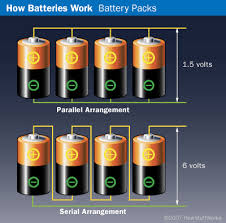

Güç, Enerji, Kapasite
Bir pilin, yakıtın verebileceği güç, onun kapasitesinden bahsedildiğini duyarız. Bu bağlamda aslında akıldaki soru çoğunlukla ne tür bir aleti bir güç kaynağı ile işletebileceğim (anlık çıktı) ve bunu ne kadar süreyle yapabileceğimdir.
Güç, Watt ile ölçülür, ki bu birim zamanda transfer edilen enerji (joule / saniye). Mesela birisi için güçlü diyebiliriz, birini dövmek aslında enerji transferi, enerji kısa bir zamanda bir kişiden bir diğerine transfer oluyor. Peki bu kişi, mesela boksör, ne kadar süre bunu yapabilir? Bu kapasite. Bir pil ne kadar dayanır? Aynı fikir. Kapasiteyi Watt-saat ile ölçebiliriz, bir saatte sürekli 1 Watt verilince ortaya çıkan güç bloğu bu. Piller için Watt voltaj çarpı ampere eşittir (birim zamandaki bir akış amper içinde var, hesap bozulmuyor).
Fakat güç, kapasite fikirlerini pillere uygulamak isteyince karışıklık olabiliyor. Bir pile bakıyoruz, çoğunlukla mAh diye bir birimden bahsediyor, bu birim mili amper-saat demek. Ama Volt lazım, o nerede? 10Ah @ 12V pilin kapasitesi 10Ah @ 5V pilin kapasitesinden büyüktür [12].
Bahsedilmeyen şey bazen tahmin edilebiliyor. Mesela lithium pill hücreleri için voltajın 3.6V or 3.7V olduğu biliniyor, bunu alıp çarpımı yaparsak ve 1000 ile bölersek Watt-saat kapasiteye erisebiliriz. O zaman mesela bir 10,000mAh etiketli pil görürsek kapasite 10000 x 3.6 /1000 = 36 Watt-saat diyebiliriz.
Başka bir örnek, bir kamp lambası aldım, Fenix CL20R markası. İçindeki pil 1600mAh imiş. Voltaj nerede? Ürünün sitesine bakıyorum, içindeki pilin 7 tane AAA piline eşit olduğu yazıyor. Her pil 1.5 V ise seri şekilde bağlanınca 10.5 V olur. Voltajı bulduk.
Bu lambanın farklı ışık seviyeleri var, her birinde ne kadar uzun dayanır acaba?
Işık seviyesi lumen ile ölçülür. Yine ürün sitesine,
300 lumen (6 saat)
130 lumen (12 saat)
40 lumen (20 saat)
1 lumen (200 saat)
diyor. Bana Watt lazım [13].
Bir LED lamba 80-100 lumens/W imiş. 300 lumen varsa, 3 W. O zaman, 1600 mah * 7 * 1.5 volt / 1000 = 16.8 Wh. Bizde 3W lumens var, ne kadar dayanir? 16.8 / 3 = 5.6 saat. Doğru duruyor.
Seri, Paralel Pil Bağlantıları
Pilleri seri şekilde bağlamak toplam voltajı artırır. Dört tane 1.5 Voltluk pili seri şekilde bağlayınca toplam 6 Volt elde ederiz. Tabii ki eğer aynı devreye, aynı dirence uygulanan voltaj artınca akımda da artış olur. Fakat pilin toplam akım kapasitesinde, yani mAh ile belirtilen sayıda, artış olmaz (bu arada seri şekilde bağlı pillerin aynı mAh'a sahip olması gerekir).
Paralel bağlı pillerde ise akım kapasitesinde artış olur, fakat voltajda artış olmaz. Dikkat akım seviyesi aynı kalır, sadece aynı akımı daha uzun süre çekebiliriz [9, 10, 11].

LiPo Pilleri
Bu tür piller yüksek amper üretebilirler. Etikletlenmeleri kafa karıştırabilir, mesela 4S-2200 20C diyor, bu ne demek. Bu etiketli pil 2200 mAh üretir. Burada 20C yük boşaltımı (discharge) demek, pilin maksimum akım verme kapasitesini bulmak için 20C icindeki 20 sayısını 2200 ile çarpıyoruz, 20 x 2200 = 44000 milliamper = 44 amper buluyoruz. Bu hesap bize bu pilin güvenli bir şekilde sürekli maksimum 44 amper verebileceğini söylüyor. Tabii dolaylı olarak bu da demektir ki 44 amperi bu şekilde sürekli olarak alsak pil ancak 3 dakika civarı dayanır, çünkü enerji kapasitesini biliyoruz, 2200 mah, ki bu miliamper saat, 2200 x 60 miliamper dakika eder, o zaman
print ((2200 * 60) / 44000, 'dakika')
3.0 dakika
Benzer mantıkla 4S-2200 30C pili 66 ampere kadar gereksinim duyan uygulamalar için kullanılabilir.
Kaynaklar
[1] https://www.tested.com/art/makers/846909-hobby-rc-analyzing-lipo-battery-discharge-rates/
[9] https://www.endesa.com/en/discover-energy/blogs/volts-watts-amps-what-are-they-how-do-they-differ
[10] https://www.quora.com/What-is-the-difference-between-volts-and-amps
[11] https://batteryuniversity.com/learn/article/serial_and_parallel_battery_configurations